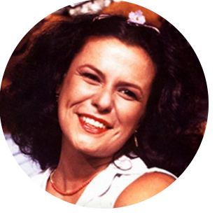

MPB
Para muitos, um dos mais bonitos e encantadores estilos musicais. A MPB é nascida e criada nas ruas brasileiras, por compositores inteligentíssimos e talentosos. Mais especificamente, seu início data 1960, com a segunda geração da Bossa Nova, na Cidade Maravilhosa.
Basicamente, esse estilo musical é a fusão da Bossa Nova e do Folclore, juntando aqueles que defendem a sofisticação musical e aqueles que desejam ser fiéis às raízes da música brasileira. Entretanto, é perpetuado pela hibridez e versatilidade provocada pela mistura de vários outros gêneros musicais, sendo difícil definir a MPB em uma vertente só. A MPB foi uma tentativa de produzir uma música brasileira "nacional" a partir de estilos tradicionais, e por isso não pode ser confundida com samba, pagode, e outros estilos musicais do Brasil.
Seus artistas são numerosos, mas os principais são Elis Regina, Milton Nascimento, Caetano Veloso, Maria Bethânia, Gal Costa, Gilberto Gil, Chico Buarque, Vinicius de Moraes, Geraldo Vandré e Djavan.
Artistas importantes para o MPB
Elis Regina
Elis Regina foi uma cantora brasileira de MPB. Conhecida pela competência vocal, musicalidade e presença de palco, foi aclamada tanto no Brasil quanto internacionalmente, e comparada a cantoras como Ella Fitzgerald, Sarah Vaughan e Billie Holiday. Ela Foi a primeira grande artista a surgir dos festivais de música na década de 1960 e descolava-se da estética da Bossa Nova pelo uso de sua extensão vocal e de sua dramaticidade.
Caetono Veloso
Caetano Veloso é um músico, produtor, arranjador e escritor brasileiro. Com uma carreira que ultrapassa cinco décadas, Caetano construiu obras musicais marcadas pela releitura e renovação, considerada amplamente como possuidoras de grande valor intelectual e poético.


Chico Buarque
Chico Buarque , é um músico, dramaturgo, escritor e ator brasileiro. É conhecido por ser um dos maiores nomes da música popular brasileira. Sua discografia conta com aproximadamente oitenta discos, entre eles discos-solo, em parceria com outros músicos e compactos. Além da notabilidade como músico, desenvolveu ao longo dos anos uma carreira literária, sendo autor de peças teatrais e romances. Foi vencedor de três Prêmios Jabuti de melhor romance em 1992, 2004 e 2010.
Gilberto Gil
Gilberto Gil, é um cantor, compositor, multi-instrumentista, produtor musical e político brasileiro, conhecido por sua contribuição na música brasileira e por ser vencedor de prêmios Grammy Awards, Grammy Latino e galardoado pelo governo francês com a Ordem Nacional do Mérito (1997). Em 1999, foi nomeado "Artista pela Paz", pela UNESCO. Gil foi também embaixador da ONU para agricultura e alimentação, e ministro da Cultura do Brasil, entre 2003 e 2008.